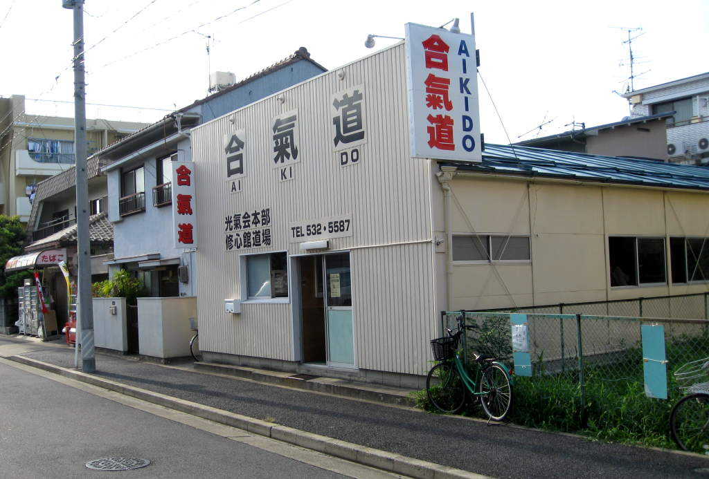

Nagoya(links to sections of Nagoya at bottom)

I
realized, as I was planning this vacation, that a train we were taking,
from the Mt. Fuji area to Osaka, crossed through Nagoya. Nagoya I
later learned was the city where the style of aikido I practice had
originated. I decided I should see if I could drop in for a
class. Apparently, I was a little short-sighted, as it is
customary to submit a formal letter requesting a visit, and
there's a chain of people that must approve it before I'm allowed to
attend a class. Even if I'm allowed to attend, it's usually just
to watch. However, as luck/misfortune would have it, the head
sensei was in Pennsylvania while I was in Nagoya. We almost
switched places. Since he was not there, I was allowed to
participate in the class. They weren't sure if I'd be allowed to
attend both classes (there were two in a row) because I only had one
gi, and I'd be sweating a lot. Lots of people attended the class
I went to. They were all black belts there. I, the puny
orange belt (less than one year of training, as opposed to 10+ years)
was brought in front of everyone and asked to introduce myself.
Someone translated for me. I said it was an honor to meet
all of them, and they applauded. I then tried to sit down, and
they told me I wasn't allowed to sit near the women. I moved, and
then endured the first class. It was so hot in that
dojo, mosquitos were picking at us, and I was exhausted,
especially after Mount Fuji, so I figured maybe it was a good thing if
I only participated in the first session. Those vending machines
in the picture were very important. There are vending machines on
every street in Japan. Well, maybe not every street, but you
never worried about ever finding something to drink, because there was
always a vending machine within sight. Anyway, they let me
participate in the second session too though. One good thing
about aikido is that the more relaxed you are, without using strength,
the better your technique. Since I was so worn out, my muscles
weren't capable of doing anything, so I think my technique improved.
After class, I raided the vending machines again and was on my
way.
Here's a nice shot of Nagoya.
In the water, I saw this turtle. I love turtles, and I think this one returned the affection.
RestaurantNagoya CastleBack